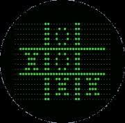

Juegos con el paso del tiempo
- Primer videojuego 
- VideoJuegos Modernos
En el siglo XIX, con la Revolución Industrial, comenzaron a surgir las primeras máquinas de entretenimiento. Estas máquinas, que se encontraban en lugares como ferias y parques de atracciones, eran primitivas en comparación con los videojuegos modernos, pero establecieron la idea de interactuar con una máquina para el entretenimiento.
En la década de 1940, los avances en la electrónica y la computación dieron lugar a las primeras máquinas que podrían considerarse predecesoras de los videojuegos. Estas máquinas utilizaban la tecnología de la época, como los tubos de rayos catódicos, para crear interacciones simples que se asemejaban a los juegos.
l primer dispositivo que puede clasificarse como un videojuego fue el “Tubo de rayos catódicos Dispositivo de entretenimiento” patentado en 1947. Este dispositivo permitía a los usuarios controlar un punto en la pantalla que podía interactuar con otros objetos.
En 1950, Claude Shannon, conocido como el “padre de la teoría de la información”, construyó una máquina de ajedrez que podía jugar un juego completo de ajedrez contra un oponente humano. Aunque esta máquina no era un videojuego en el sentido moderno, fue uno de los primeros ejemplos de una máquina diseñada para jugar un juego.
Jugamos videojuegos para encontrar una salida ante una actualidad turbulenta, también para hacer amigos, reunir amistades o intentar algo diferente, pero sobre todo, para ser el héroe de un mundo que no podemos habitar